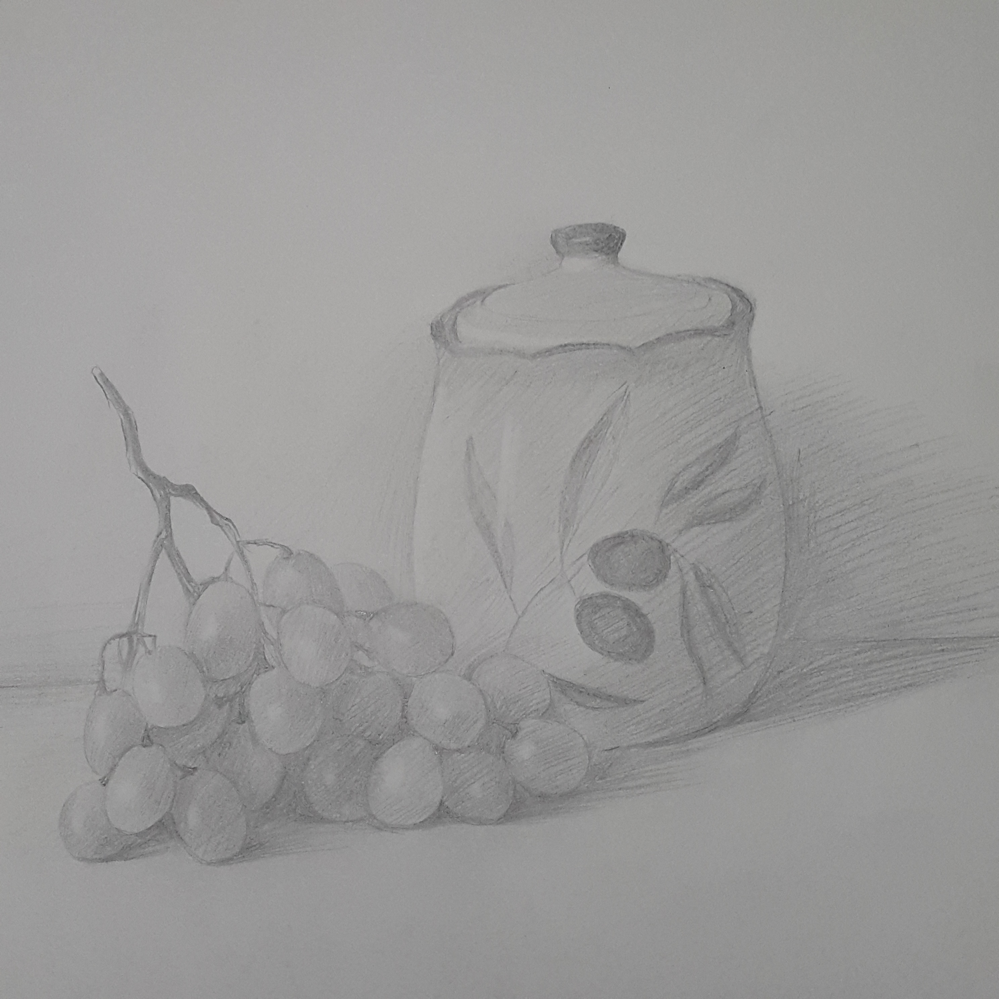

Interests:
My Interests are Anime, Music, Arts, I do like cats too! Here's a nested loop to show my sub-interests for topics!
-
Music
- Classical
- Jazz
- Indie rock
- Pop
-
Art
- Painting
-
Sketching
- black and white
-
Movie
- Sci-Fi
- Mystery
- Action
-
Sport
- Table Tennis
- Running
- Swimming
I like the City of Toronto. Look how beautiful the scenery is!
| Arts | |
|---|---|
|  | |